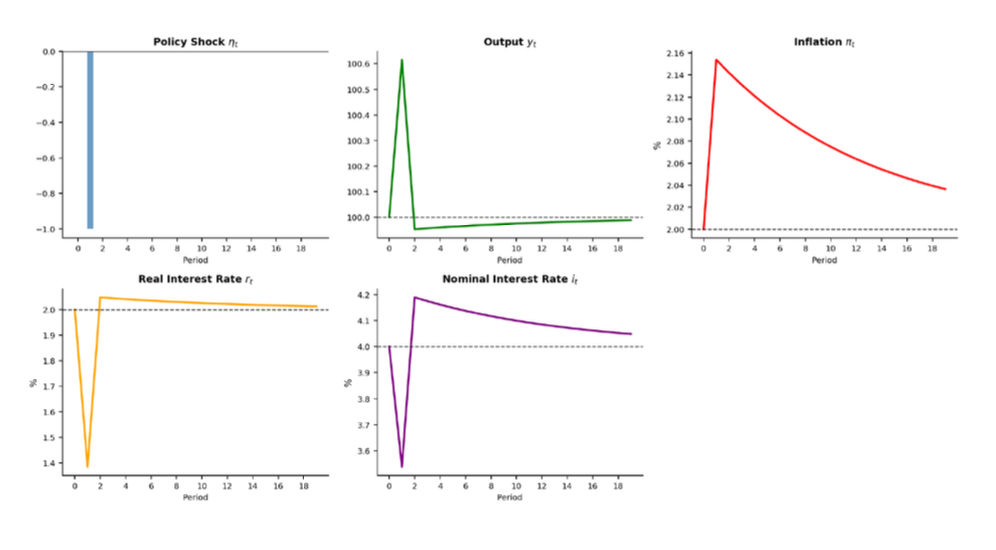
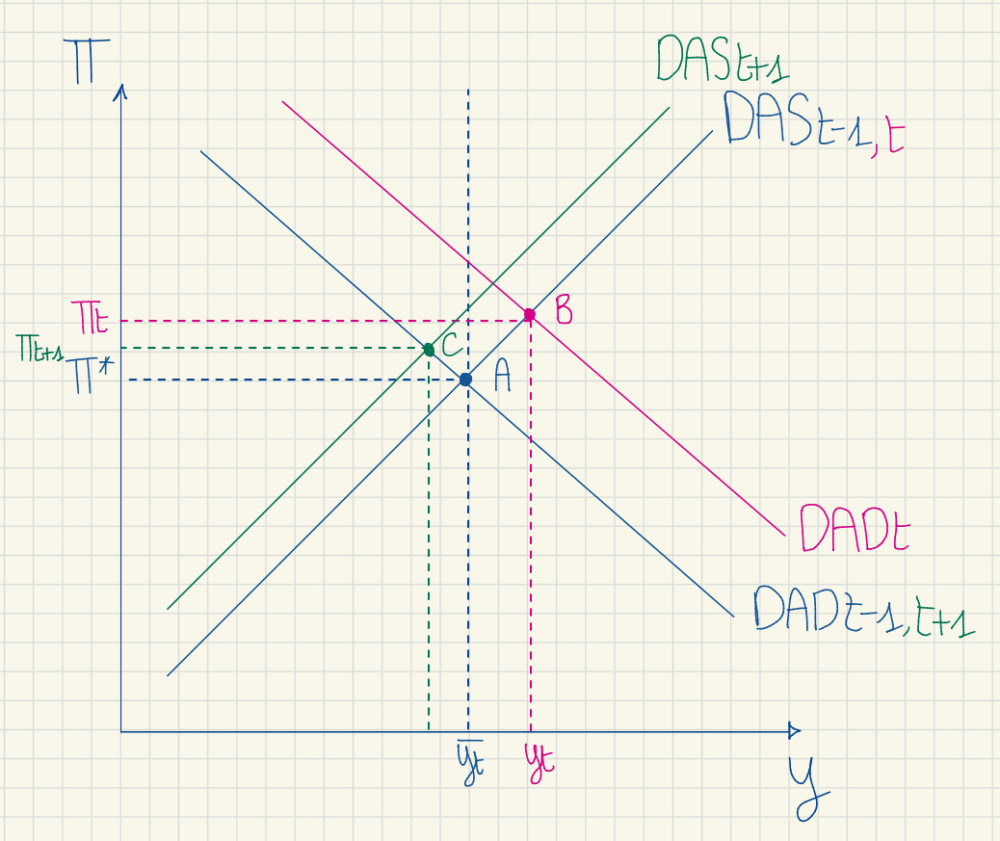

Seminar 5: Shock Analysis (MP)
Analyzing central bank interventions and monetary policy errors.
Monetary Policy Shock ($\eta_t$)
The standard Monetary Policy Rule (MPR) is augmented with a monetary policy shock $\eta_t$:
$i_t = \pi_t + \rho + \theta_\pi (\pi_t - \pi_t^*) + \theta_y (y_t - \bar{y}_t) + \eta_t$
- What does $\eta_t$ represent economically?
- Derive the modified Dynamic Aggregate Demand (DAD).
- For a one-period shock $\eta_0 = -1$ (unexpected rate cut), calculate the period 0 effects on all variables.
- Trace the dynamics in subsequent periods with $\eta_t = 0$ for $t \ge 1$.
Show Solution
The shock $\eta_t$ represents any deviation of the central bank from its own Taylor Rule. It captures discretionary monetary policy actions that cannot be explained by current inflation or the output gap.
Interpreting the sign:
- If $\eta_t > 0$: The central bank sets interest rates higher than what the rule prescribes. This is an unexpected rate hike (hawkish mistake / deliberate tightening).
- If $\eta_t < 0$: The central bank sets interest rates lower than prescribed. This is an unexpected rate cut (dovish mistake / artificial stimulus).
To find the DAD, we substitute the Fisher equation and the new MPR into the IS equation.
1. The 3 core equations:
- IS: $y_t = \bar{y} - \alpha(r_t - \rho) + \epsilon_t$
- Fisher + Expectations: $r_t = i_t - \pi_t$ (assuming $E_t\pi_{t+1} = \pi_t$)
- New MP: $i_t = \pi_t + \rho + \theta_\pi(\pi_t - \pi^*) + \theta_y(y_t - \bar{y}) + \eta_t$
2. Substitute Fisher into IS:
3. Substitute MP into the new IS expression:
Notice that $\pi_t$ and $\rho$ cancel out directly inside the brackets:
4. Isolate the output gap $(y_t - \bar{y})$:
$y_t = \bar{y} - \frac{\alpha\theta_\pi}{1+\alpha\theta_y}(\pi_t - \pi^*) - \frac{\alpha}{1+\alpha\theta_y}\eta_t + \frac{1}{1+\alpha\theta_y}\epsilon_t$
An unexpected rate cut ($\eta_t < 0$) mathematically shifts the DAD curve to the right, acting exactly like a positive demand shock.
We use standard parameters: $\alpha = 1,\ \phi = 0.25,\ \theta_\pi = 0.5,\ \theta_y = 0.5,\ \rho = 2,\ \pi^* = 2,\ \bar{y} = 100$, and no other shocks ($\epsilon_0 = 0$).
① Monetary Policy Rule (MP)
$\eta_0 = -1 \implies i_0 \downarrow$
👉 The central bank sets the nominal interest rate below what the Taylor Rule would prescribe — an unexpected rate cut.
② Fisher Equation (FE)
$i_0 \downarrow \implies r_0 \downarrow$
👉 The real interest rate falls directly. Borrowing becomes cheaper in real terms.
③ IS Curve
$r_0 \downarrow \implies y_0 \uparrow$
👉 Lower real rates stimulate consumption and investment → output rises above potential ($y_0 > \bar{y}$).
④ Phillips Curve (PC)
$y_0 > \bar{y} \implies \pi_0 \uparrow$
👉 The positive output gap ($y_0 > \bar{y}$) creates upward pressure on inflation.
⑤ Fisher Equation — Amplification loop
$\pi_0 \uparrow \implies r_0 \downarrow$ further
👉 The rise in inflation reduces the real interest rate even more, amplifying the initial boom through the IS curve.
⑥ Monetary Policy Rule — Final Reaction
With $\pi_0 \uparrow$ and $y_0 \uparrow$, the Taylor Rule mechanically pushes $i_0$ back up.
👉 But this reaction only partially offsets the initial cut: the net effect is still $i_0 \downarrow$ (by less than $|\eta_0| = 1$).
Numerical Resolution — Solving the DAD/DAS system simultaneously:
- DAD$_0$: $y_0 - 100 = -0.33(\pi_0 - 2) + 0.67$
- DAS$_0$: $\pi_0 - 2 = 0.25(y_0 - 100)$
$1.083(y_0 - 100) = 0.67 \implies y_0 - 100 \approx 0.62$
⚠️ Period 0 Final Results
- Output: $y_0 = \mathbf{100.62}$ → boom above potential
- Inflation: $\pi_0 = 2 + 0.25 \times 0.62 = \mathbf{2.155}$ → above target
- Nominal Rate: $i_0 = 2.155 + 2 + 0.5(0.155) + 0.5(0.62) - 1 = \mathbf{3.54}$ → lowered, but less than $|\eta_0|$
- Real Rate: $r_0 = 3.54 - 2.155 = \mathbf{1.385}$ → below natural rate $\rho = 2$, confirming stimulus
In period $t+1$, the central bank stops the discretionary cut and returns to the standard Taylor Rule ($\eta_{t+1} = 0$). The DAD curve shifts back to its original position. However, the economy is not back to normal — it has inherited high inflation expectations.
① Inflation Expectations (DAS shift)
Under adaptive expectations, agents remember the inflation spike from period 0.
👉 The DAS curve shifts upward: even with no new shock, inflation is expected to remain above target.
② Phillips Curve (PC)
High $\pi_{t+1}^e$ means $\pi_{t+1} > \pi^*$ even if the output gap is slightly negative.
👉 Inflation remains above target due to expectation inertia.
③ Monetary Policy Rule (MP)
$\pi_{t+1} > \pi^* \implies i_{t+1} \uparrow$
👉 The Taylor Rule reacts aggressively to above-target inflation, raising the nominal rate.
④ Fisher Equation (FE)
$i_{t+1} \uparrow$ while $\pi_{t+1}^e$ is fixed (formed in $t$) $\implies r_{t+1} \uparrow$
👉 The real rate rises above the natural rate $\rho$, making borrowing more expensive.
⑤ IS Curve — Recession
$r_{t+1} \uparrow \implies y_{t+1} \downarrow < \bar{y}$
👉 Output falls below potential. The economy enters a temporary recession — the necessary "hangover" to correct the inflation inherited from period 0.
Economic Interpretation
In period $t+1$, the central bank stops its discretionary expansion and follows the Taylor Rule again. The DAD curve shifts back to its initial position. However, inflation expectations remain high due to the inflation spike of period 0. This shifts the DAS curve upward.
To bring inflation back to target, the central bank must raise the nominal rate enough to push the real rate above $\rho$. This contracts output below $\bar{y}$, creating a short-run recession. This contraction is the necessary cost to gradually squeeze out the inherited inflationary expectations.

A one-period unexpected rate cut ($\eta_0 = -1$) triggers an immediate boom in output and inflation in period 0. In period 1, the DAD shifts back but the DAS remains elevated due to high adaptive expectations. The economy enters a hangover recession ($y_{t+1} < \bar{y}$) that progressively drags inflation back to target.

Initial equilibrium is at point A ($y = \bar{y}, \pi = \pi^*$). The monetary shock $\eta_0 < 0$ shifts the DAD curve to the right ($\text{DAD}_0$), moving the economy to point B with higher output and inflation. In period 1, the DAD returns to its original position, but the higher expected inflation shifts the DAS curve upward ($\text{DAS}_1$), moving the economy to point C, characterized by a recession and high (but falling) inflation.
End of Seminar 5 — Monetary Policy Shocks. Utilizing Codex Logic standards.